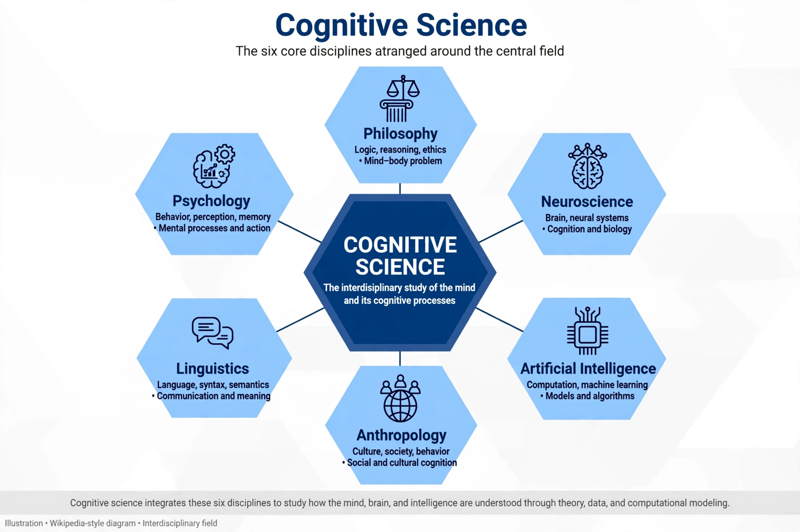

Cognitive science
From Wikipedia, the free encyclopedia

Cognitive science is the interdisciplinary study of mind and intelligence, embracing psychology, Artificial intelligence, philosophy, linguistics, neuroscience and anthropology. Born in the 'cognitive revolution' of the 1950s–60s — when behaviourism's ban on mental states gave way to computational models of cognition — it studies perception, memory, language, reasoning and consciousness as information processing, in humans, animals and machines.
Foundations
Milestones include Noam Chomsky's 1959 demolition of Skinner's behaviourist account of language, Miller's 'magical number seven' (1956), Newell and Simon's early AI programmes, and the Cognitive revolution's core wager: that mental representations and computations could explain behaviour. The field institutionalised in the 1970s (journal, society, departments) around the computer metaphor of mind.
Branches and debates
Connectionism (neural networks), embodied and enactive cognition, Bayesian models and predictive processing have successively challenged the classical symbol-processing picture; the rise of deep learning since 2012 — artificial systems that learn representations — revived every foundational question about what minds are and whether machines can have them. Cognitive science feeds directly into education, human–computer interaction and the philosophy of consciousness.